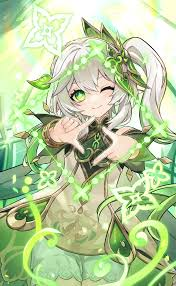

Hero 2

Nahida
Physic of Purity
Nahida, also known as the Lesser Lord Kusanali, is a gentle and wise figure in the world of Genshin Impact. She serves as the current Dendro Archon, bringing wisdom and guidance to her followers. Despite her youthful appearance, Nahida possesses immense knowledge and power.